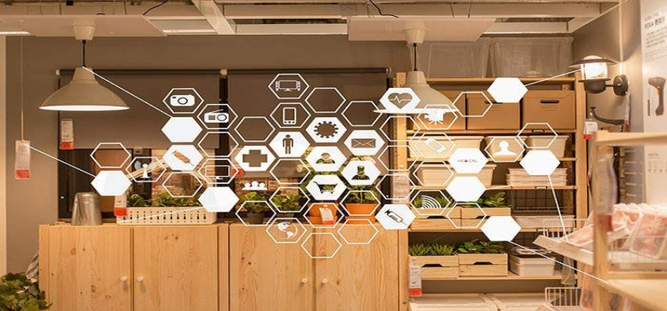

-

智能家居是什么，能带来哪些新的变化
近年来身边有越来越多的人开始关注智能家居起来了，但大多数都是听说，并不了解智能家居是什么，能带来哪些新的变化，在这里小编从几个常见的场景给大家简单介绍下智能家居：1.早晨，当您还在熟睡时，轻柔的音乐缓缓响起，卧室的窗帘准时自动拉开，温暖的阳光轻洒入室，呼唤你开始新的一天。当你起床洗漱时，营养早餐已经做好，餐毕，音响自动关机，提醒您赶快上班。当你和家人外出旅游时，可设置主人在家的虚拟场景，这样小偷就不敢轻举妄动了。
查看详情
-

深入解剖智能家居前景与用户需求
近几年来，智能家居巨大的市场潜力吸引了众多企业纷纷踏至而来，为能够抢占这块蛋糕做着充分的准备。然而，看似已经迈上大好之路的智能家居，却没有产生厂商所期待的那种效果。随着市场普及的不断扩大，智能家居也将会迎来低价时代，这其中离不开房地产商的推助以及物联网技术的发展。智能家居前景分析智能家居一直以来留给大家的印象，多半也就是高科技、方便，什么远程、实时、定时控制，再有灯光控制、窗帘控制、电器控制、环境控制、安防监控之类的，总而言之，无论是智能家居厂商的宣传，还是人们固有的印象，大家都觉得，智能家居的作用，那就是为了生活方便的。
查看详情
-
移动终端，智能家居的心脏
作为小区智能化系统的核心，智能家居平台系统通过其核心设备——家庭智能终端来实现家庭智能化的功能。智能终端可谓是智能家居发展的集大成者。家庭智能终端是智能家居的心脏，通过它来实现系统信息的采集、信息输入/输出、集中控制，远程控制、联动控制等功能。所谓的智能家居，就是以住宅为平台，通过一个以计算机为依托的集中的家居智能管理系统，将家中的安防系统、照明、环境控制、网络和家电等各种设备，通过家庭网络连接到一起，从而实现家居安全舒适、信息交互与通信的功能，构筑未来生活自动化、人性化的理想生活。
查看详情